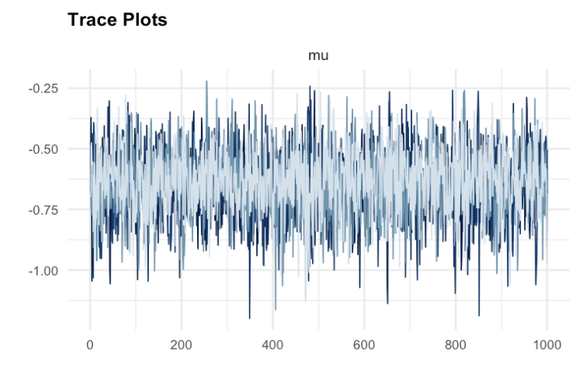
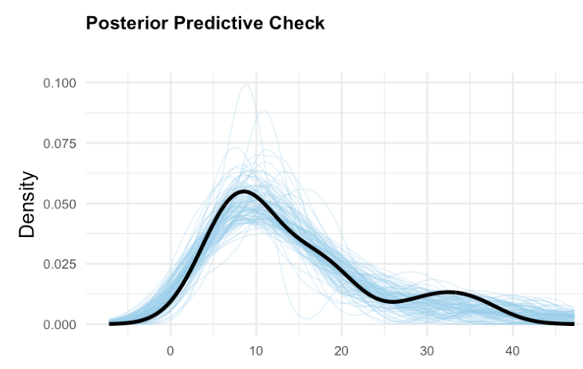

Bayesian meta-analysis workflow
A complete guide using the bayesma package
Source:vignettes/workflow-diagram.qmd
Data preparation
Link
Stage 1
Trustworthiness assessment (INSPECT-SR)
Link
Stage 2
Trustworthiness across 4 domains
Preliminary exploration (PRIMED)
Link
Stage 3
Risk of bias assessment
Link
Stage 4
Model specification & fitting
Link
Stage 5
bayesma(sample_prior = TRUE)
pp_check()
Priors (μ, τ), RE distribution, likelihood, stage, bias correction
Model fitting
Link
Stage 6
bayesma(stage = "one_stage")
bayesma(model_type = " ")
Stan MCMC, 4 chains, convergence diagnostics
Model comparison
Link
Stage 7
Model diagnostics
Link
Stage 8
Trace plots, Rhat, ESS, posterior predictive check


Bias assessment
Link
Stage 9
Heterogeneity assessment
Link
Stage 10
τ² posterior, predictive distribution
Subgroup and moderation analysis
Link
Stage 11
Categorical / continuous moderators, regression coefficients
Sensitivity analysis
Link
Stage 12
Interpretation and reporting
Link
Stage 13
Pooled effect + 95% CrI, P(direction), Bayes factor, forest plot, MCMC diagnostics
Left boxes: bayesma functions
connects to
Right boxes: outputs / configuration